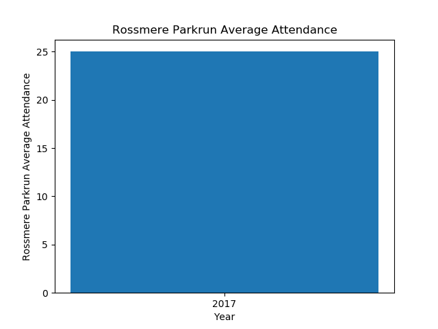
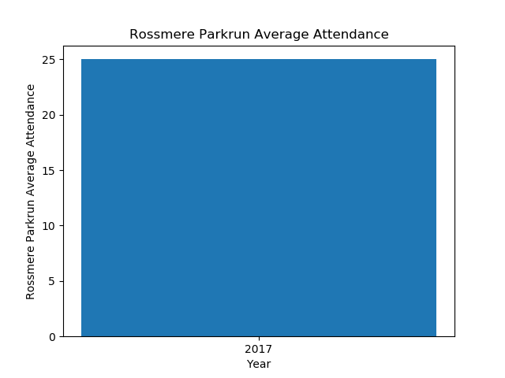
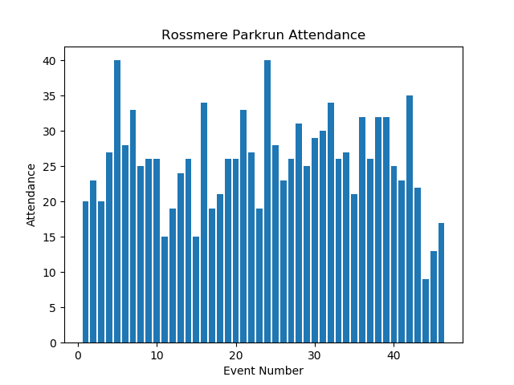
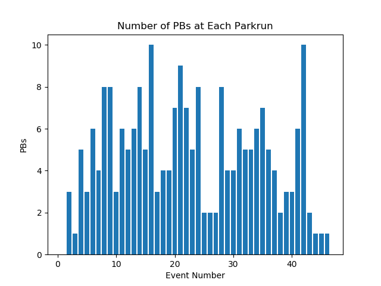
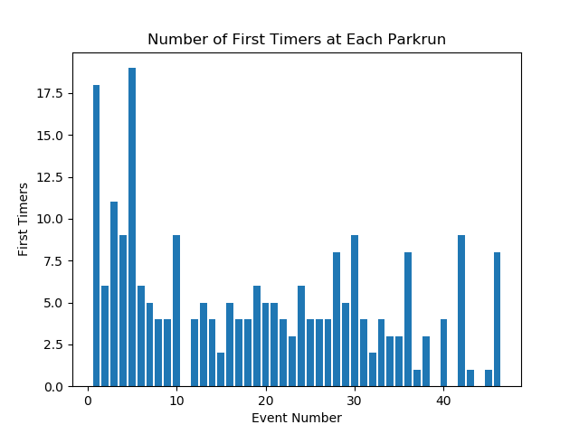

Annual Summary for Rossmere Parkrun
Annual Attendance
| Year | Number of Events | Average Attendance | Number of Runs | Number of Volunteers | Number of PBs | Number of First Timers |
|---|
| 2017 | 46 | 25 | 1178 | 835 | 217 | 233 |
 

Statistics for Events between 01/01/2017 and 31/12/2017
Max Attendance = 40, Min Attendance = 9



Top Participants
Top Volunteers
Total number of volunteering events
| Name | Number of Runs | Number of Volunteers |
|---|
| 1 | Heidi MORRISON | 0 | 40 |
| 2 | Bryan LANGSTON | 0 | 39 |
| 3 | David NOBLE | 0 | 38 |
| 4 | Steven MORRISON | 0 | 37 |
| 5 | Audrey STREETING | 0 | 35 |
| 6 | Carl MARCHANT | 0 | 33 |
| 7 | Janis NOBLE | 0 | 29 |
| 8 | Stephen TAYLOR | 0 | 27 |
| 9 | Ann SMITH | 0 | 25 |
| 10 | Michael STREETING | 0 | 24 |
| 11 | Christine BRUCE | 0 | 22 |
Most Runs
Total Number of Runs in the period
| Name | Number of Runs | Number of Volunteers |
|---|
| 1 | Emilie- Jaye NOBLE | 36 | 0 |
| 2 | Alexander ORGAN | 35 | 0 |
| 3 | Harry MINTON | 28 | 1 |
| 4 | Zac BEDDING | 26 | 0 |
| 5 | Noah SWINBOURNE | 25 | 0 |
| 6 | Isabelle CARLILE | 24 | 0 |
| 7 | Matthew PISCHOS | 23 | 0 |
| 8 | Sophie PISCHOS | 22 | 0 |
| 9 | Freddie MINTON | 21 | 5 |
| 10 | Jake Robert WATSON | 20 | 0 |
Time on Feet
Total time spent running in the period.
| Name | Time on Feet (hours) |
|---|
| 1 | Sophie PISCHOS | 7.3 |
| 2 | Harry MINTON | 6.7 |
| 3 | Alexander ORGAN | 6.6 |
| 4 | Noah SWINBOURNE | 5.7 |
| 5 | Isabelle CARLILE | 5.6 |
| 6 | Emilie- Jaye NOBLE | 5.6 |
| 7 | Oliver HINKS | 5.5 |
| 8 | Matthew PISCHOS | 5.0 |
| 9 | Jake Robert WATSON | 4.6 |
| 10 | Zac BEDDING | 4.5 |
Keenest
Total Participation (run + volunteer). Note: Running and volunteering on the same day counts.
| Name | Number of Runs | Number of Volunteers | Total |
|---|
| 1 | Heidi MORRISON | 0 | 40 | 40 |
| 2 | Bryan LANGSTON | 0 | 39 | 39 |
| 3 | David NOBLE | 0 | 38 | 38 |
| 4 | Steven MORRISON | 0 | 37 | 37 |
| 5 | Emilie- Jaye NOBLE | 36 | 0 | 36 |
| 6 | Alexander ORGAN | 35 | 0 | 35 |
| 7 | Audrey STREETING | 0 | 35 | 35 |
| 8 | Carl MARCHANT | 0 | 33 | 33 |
| 9 | Harry MINTON | 28 | 1 | 29 |
| 10 | Janis NOBLE | 0 | 29 | 29 |
Consistency
Smallest variation (standard deviation) in run times.
| Name | Run Time SD (sec) | Number of Runs |
|---|
| 1 | Charlie LEAK | 7.0 | 10 |
| 2 | George CRAGGS | 12.6 | 12 |
| 3 | Ethan JEFFRIES | 17.3 | 16 |
| 4 | Emilie- Jaye NOBLE | 19.1 | 35 |
| 5 | Alexander ORGAN | 21.3 | 35 |
| 6 | Zac BEDDING | 23.8 | 25 |
| 7 | Harley ROWLAND | 25.5 | 16 |
| 8 | Jenson WILLIAMS | 35.1 | 14 |
| 9 | Isaac ORGAN | 37.4 | 14 |
| 10 | Oliver BLANCHARD | 37.8 | 11 |